| [ < ] | [ > ] | [ << ] | [ Up ] | [ >> ] | [Top] | [Contents] | [Index] | [ ? ] |
Chapter summary:
vguiis a user interface library for computer vision applicationsvguisupports the following general functions:
- Menus
- Displaying Images
- Displaying/Creating Geometric Features
The
vguidesign is based on the OpenGL graphics library, and is intended to be platform independent and adaptable to a wide range of GUI toolkits. The centralvguiclass is thetableauwhich is a region (or regions) of the screen for carrying out display and event processing. Various tableaux can be assembled and layered to create a complex GUI application. At the same time, each tableau is relatively simple and can often be used independently in a small application such a popup image displayer.This chapter is concerned with basic vgui programming and does not consider the issues associated with adapting vgui to a new window system and GUI toolkit. The examples are demonstrated using the mfc implementation of
vgui.
| [ < ] | [ > ] | [ << ] | [ Up ] | [ >> ] | [Top] | [Contents] | [Index] | [ ? ] |
A simple example will be useful to illustrate some of the basics of vgui. The appearance of an image displayer is shown in Figure 1.
|
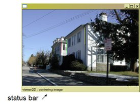
Figure 1:
A
vgui image display application.
|
The program, basic01_display_image.cxx that produced this
display is provided in the examples directory of the vgui
library, vgui/examples/. The code is reproduced below.
|
It will be useful to go through this example carefully since it brings out some of the important characteristics of programming with tableaux.
vgui::init(argc, argv):
The class vgui is the base management class for the GUI toolkits
and handles overall operations. In this example, the desired toolkit is
being potentially selected by arguments on the command line. Normally,
the kit is not specified by the user but is the first element in a
registry of toolkits. For example, on windows, the mfc toolkit is
used by default. Currently vgui supports the following toolkits:
vgui_image_tableau_new image(argv[1]):
The vgui_image_tableau is a very basic tableau that mainly handles the
display of pixels on the screen and can provide properties of the image
being displayed. We see a somewhat strange construction in the term
vgui_image_tableau_new. The idea is that all the tableaux
support smart pointers (see vbl/vbl_smart_ptr.h). However it is
desirable to be able to cast up and down the tableaux class
hierarchies. The machinery needed to do this is maintained by the
xxx_new form of construction, rather than calling the tableau
constructor directly. This mechanism will be discussed later in the
context of building a new sub-tableau.
An equivalent, and perhaps clearer, form is:
vgui_image_tableau_sptr image = vgui_image_tableau_new(argv[1]); |
The constructor reads the image file specified by
argv[1] and then inserts it into the image tableau, image.
If an image is already available, then the construction can be carried out as follows:
vil_image img; ... // get the image somehow vgui_image_tableau_sptr image = vgui_image_tableau_new(img); |
If the image_tableau already exists, then one can change the image
being displayed:
vil_image img1, img2; ... //get the images somehow //construct the image_tableau with img1 vgui_image_tableau_sptr image = vgui_image_tableau_new(img1); //change the image to img2. image->set_image(img2); |
vgui_viewer2D_tableau_new viewer(image):
Next, the vgui_image_tableau, image, is added to a
vgui_viewer2D_tableau. The viewer is responsible for
manipulating the pan and zoom states of the tableaux being viewed,
i.e, those below the viewer in the tableaux hierarchy. In our
simple example, only the image tableau is under the control of the
viewer. Again, an alternative form for the construction is:
vgui_viewer2D_tableau_sptr viewer = vgui_viewer2D_tableau_new(image); |
The viewer responds to a variety of events such as key presses, mouse motion and mouse clicks. See events. The current implementation has the following menu of event processing:
(CTRL + left mouse) | |
(CTRL + middle mouse) | |
(CTRL + right mouse) | |
(CTRL + 'c') | |
(CTRL + 'x') | |
(CTRL + '-') | |
(CTRL + '=') | |
('n') | |
('z') | |
('d') | |
Run the basic01_display_image example and try the various event
actions. Note that, on windows, a middle mouse is often hard to come
by since the middle mouse button does not produce a middle mouse button
event by default on Windows. If you are not getting middle mouse button
events then look at Start->Settings->Control Panel->Mouse. Check on
the "Button Actions" tab that your middle mouse button is set to "Middle"
Alternatively, the use of scroll bars can substitute for panning by
middle button mouse movement.
vgui_shell_tableau_new shell(viewer):
The shell tableau is a composite of three tableaux, including the
viewer tableau just described. The second tableau is called
vgui_clear_tableau and clears the display area on each draw
operation. Without this clear function, the image display will include
old renderings of the image in the background.
The third tableau is a vgui_tview_launcher_tableau which
prepares and displays a graph illustrating the tableau layout. This
graph can be displayed using the 'G' key-press event. The tableau
graph for this example is shown in Figure 2. Extra annotations have
been added for illustration. This graph is useful for debugging
complex tableau configurations. If the mouse is clicked above a node in
the graph, information about the tableau will be streamed to vcl_cout.
|
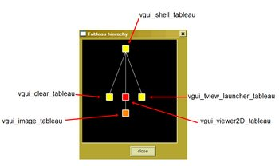 Figure 2:
The nested tableaux form a tree structure. This structure can be displayed by
the
vgui_tview_launcher_tableau which is part of the composite
vgui_shell_tableau. The edges in the graph are represented by instances
of the class vgui_parent_child_link.
|
vgui::run(shell, image->width(), image->height()):
This last expression causes the shell tableau hierarchy to be
displayed on the screen and to continuously process events. The
window size is determined by the last two arguments. Note that
the borders of the window are included in these values so, for
small images, the margin widths can be significant and the entire image
is not visible when the window is displayed.
In programming with tableaux, it is often necessary to retrieve a
particular tableau in a hierarchy such as the shell → viewer
→ image stack in the example. This access is provided by the method,
vgui_tableau_sptr::vertical_cast(vgui_tableau_sptr const& tab).
The following code fragment will illustrate its use:
vgui_image_tableau_sptr get_image_tab(vgui_tableau_sptr const& tab)
{
vgui_image_tableau_sptr i_tab;
if (tab)
itab.vertical_cast(vgui_find_below_by_type_name(tab,
vcl_string("vgui_image_tableau")));
return i_tab;
}
|
If the input tableau, tab, is above an image tableau in the
hierarchy then this routine will return it, otherwise the returned
tableau will be null. One can also keep smart pointers to each tableau
as members in an application class, which provides convenient access.
| [ < ] | [ > ] | [ << ] | [ Up ] | [ >> ] | [Top] | [Contents] | [Index] | [ ? ] |
| [ < ] | [ > ] | [ << ] | [ Up ] | [ >> ] | [Top] | [Contents] | [Index] | [ ? ] |
In many computer vision applications, it is useful to be able to display
multiple images in the same window. The vgui_grid_tableau is
designed for this purpose. The each element of the grid holds a sub-hierarchy
of tableaux.
A simple example of multiple panes is provided by
vgui/examples/basic01a_multiple_panes.cxx, reproduced below.
The result of executing this program with two image paths supplied
on the command line is shown in Figure 3.
|
|
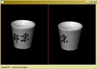 Figure 3:
The
vgui_grid_tableau supports the display of multiple panes.
|
vgui_vgrid_tableau is constructed and the viewers are inserted in the
left and right panes. Note that the order of the indices in the method,
vgui_grid_tableau::add_at(unsigned col, unsigned row) is transposed from
the order normally used for matrices, i.e. rows then columns.
constructed.
In the case of multiple panes, it becomes an issue as to which pane is considered active. That is, suppose we wanted to replace the image in a pane selected by the user. How does the user indicate what pane is to be updated? A simple approach would be to have the user input the column and row of the grid cell to be updated using a menu (we will discuss menus in a later section). There are several additional grid methods that help define the grid cell that is to be operated on.
void get_active_position(unsigned* col_pos,unsigned* row_pos):
This method returns the column and row of the cell which is under the mouse cursor.
void get_last_selected_position(unsigned* col_pos,unsigned* row_pos):
This method returns the column and row of the last cell where the left mouse key was clicked.
An application can then use these selections to operate on the desired pane.
For example, if a user wants to load and image from a file into a particular
pane, they would click on the desired pane and then push the load-image menu.
The menu callback routine would use the last_selected_position method to
identify the appropriate vgui_image_tableau.
The grid tableau responds to other events as follows:
Modifier Key Result
= Add a column to the grid
- Remove a column from the grid
CNTL = Add a row to the grid
CNTL - Remove a row from the grid
PAGEUP Page the grid tablaux forward in the active cell
PAGEDOWN Page the grid tablaux backward in the active cell
|
| [ < ] | [ > ] | [ << ] | [ Up ] | [ >> ] | [Top] | [Contents] | [Index] | [ ? ] |
|
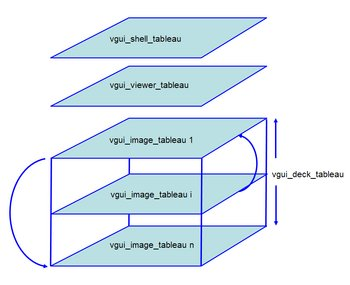 Figure 4:
The
vgui_deck_tableau supports the display of a stack of child tableaux.
A typical application is to be able to page through a sequence of images.
Only the tableau root on the top of the stack responds to events, such as pan and zoom.
|
vgui/examples/basic01b_deck.cxx. The concept of a deck is shown in Figure 4.
The example code is:
|
The deck tableau responds to vgui_PAGE_UP and vgui_PAGE_DOWN
events, which advance or backup the deck sequence.
| [ < ] | [ > ] | [ << ] | [ Up ] | [ >> ] | [Top] | [Contents] | [Index] | [ ? ] |
| [ < ] | [ > ] | [ << ] | [ Up ] | [ >> ] | [Top] | [Contents] | [Index] | [ ? ] |
|
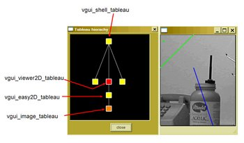 Figure 5:
Geometry overlaid on the image is shown on the right.
The tableau graph for this example is shown on the left.
|
vgui supports the subject-view programming pattern. That
is, there is a clear separation between a class object, such as a line
segment, and its view which is the manner in which it is
rendered on the screen. Indeed, one can have many different views for
a given object. The same line can be displayed with
different line widths or colors, or even in an entirely different form
such as a point in an image of Hough space, (rho, theta).
Note, this subject-view approach is perversely called document-view in MFC.
The following example illustrates the ability of vgui to display geometric figures, and its result is shown in Figure 5.
|
The first new code we encounter in the example is:
vgui_easy2D_tableau_new easy2D(image); |
or equivalently,
vgui_easy2D_tableau_sptr easy2D = vgui_easy2D_tableau_new(image); |
The vgui_easy2D_tableau is responsible for rendering 2-d
geometric shapes on top of its child, a vgui_image_tableau.
The commands for inserting various geometric elements are of the form
add_xxx(...). vgui_easy2D_tableau assumes an
elemental form of geometric specification, where the points and lines
are directly specified by their parameters. The definitions for each add
method used in the example are:
vgui_soview2D_point* add_point(float x, float y) vgui_soview2D_lineseg* add_line(float x0, float y0, float x1, float y1) vgui_soview2D_infinite_line* add_infinite_line(float a, float b, float c) |
The point is defined by its location. The line segment is specified by the endpoints. The infinite line is specified by its line coefficients: ax + by +c = 0.
The appearance (or style) of the display is controlled by the following style specifiers:
void set_foreground(float r, float g, float b) void set_line_width(float w) void set_point_radius(float r) |
The term foreground refers to the color of the displayed
geometry. The style of each element added to vgui_easy2D after
the set_foreground, set_line_width, and set_point_radius
commands is assigned according to their specification until a new style command
is issued.
|
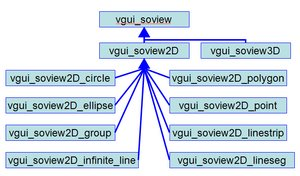 Figure 6:
The hierarchy for 2-d soviews.
vgui also has some support for 3-d rendering.
|
A particular view of a geometric entity is specified by the class,
vgui_soview which has the hierarchy shown in Figure 6. The
constructor for a vgui_soview extracts the necessary
information from the object to specify OpenGL rendering commands. The
commands then add to the OpenGL display list to be rendered. While the
current set is adequate for a wide range of computer vision programming,
more advanced users will want to create their own vgui_soview
subclass to provide convenient display interfaces for their objects, or to
achieve special viewing capabilities.
| [ < ] | [ > ] | [ << ] | [ Up ] | [ >> ] | [Top] | [Contents] | [Index] | [ ? ] |
It is often necessary to create geometric features such as a box to
define a region of interest for image processing or a line for sampling
pixels to provide an intensity plot. The following example shows how to
create an interactive tool for drawing lines and circles. Interactive drawing
consists of a tight loop of mouse position tracking and rendering so
that the feature point tracks the mouse movements. This loop is called
rubber-banding, since the feature seems to stretch and pull as the
mouse moves. The rubberband loop is usually terminated by an event,
such as a left mouse click. An example of a rubberband application is
provided in vgui/examples/basic10a_rubberband.cxx. For this
example, a left mouse click starts rubber-banding the feature and
another left click terminates the rubber-banding and inserts the
feature into the vgui_easy2D_tableau.
|
This example introduces several new coding aspects to discuss.
vgui_rubberband_tableau_new(new vgui_rubberband_easy2D_client(easy)):
The tight loop between mouse tracking and drawing requires a means for rendering
the feature as its parameters are continuously adjusted by the mouse. The
application could use OpenGL commands directly, but it is much simpler to use
the drawing commands provided by the vgui_easy2D_tableau that was
described earlier. See easy2D.
In order to link the rubberbanding and the drawing it is necessary to
specify a class called the vgui_rubber_band_client. The client is
assumed to be capable of drawing all the shapes that can be rubberbanded by
the rubberband tableau. A sub-class called vgui_rubberband_easy2D_client
is defined in the vgui_rubberband_tableau.h header file and handles all
the currently rubberbandable shapes.
vgui_composite_tableau_new comp(easy, rubber):
The rubberband tableau and its drawing client are included together in a
composite tableau which forms the complete rubberband drawing capability.
| [ < ] | [ > ] | [ << ] | [ Up ] | [ >> ] | [Top] | [Contents] | [Index] | [ ? ] |
The 3-d display capabilities in vgui are not well-developed.
Currently one can only display 3-d points and lines. The 3-d viewer
does provide a "trackball" mode of interaction in viewing the 3-d
geometry. An example of the vgui 3-d display is shown in Figure
7.
|
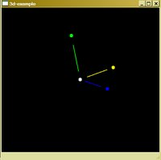
Figure 7:
vgui's 3-d display.
|
| [ < ] | [ > ] | [ << ] | [ Up ] | [ >> ] | [Top] | [Contents] | [Index] | [ ? ] |
| [ < ] | [ > ] | [ << ] | [ Up ] | [ >> ] | [Top] | [Contents] | [Index] | [ ? ] |
vgui supports basic menu capabilities such as menu bars and popup menus
as illustrated in the following example, vgui/examples/basic05_menubar.cxx:
|
The appearance of this program is shown in Figure 8.
|
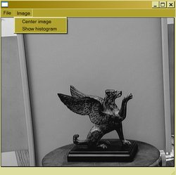
Figure 8:
A
vgui example involving menus. The menu bar on the top has sub-menus
as indicated in the figure. In the example, all the menu choices call the same
dummy function.
|
By now, most of this code should follow a familiar pattern. The new
element is the function vgui_menu create_menus(). The menu
structure is assembled hierarchically where the top-level menus have
sub-menus which can have, sub-menus etc. The basic menu construction pattern
is illustrated by the line:
file.add("Open",dummy,(vgui_key)'O',vgui_CTRL);
|
The first argument "Open" is a string representing the
label of the menu item in the menu. The second argument is the
name of the function to be called when the menu is selected. The last
two arguments define a key-press configuration that will select the
menu item without clicking on it with the mouse. In this case, the
function dummy() is called by pressing the key combination,
CTRL + 'o'.
| [ < ] | [ > ] | [ << ] | [ Up ] | [ >> ] | [Top] | [Contents] | [Index] | [ ? ] |
The appearance of a vgui pop-up menu is shown in Figure 9. A pop-up
menu is launched by pressing the right mouse button over the active application
window. Typically the role of the pop-up menu is to present operations that are
relevant to the context present when the right button is pressed. For example,
if we are displaying an image, there would be image display or image processing
operations presented in the menu. Another mode might dominate when the tableau
contains only geometric features. In that case, the menu items might present
geometric operations such as translation or rotation.
|
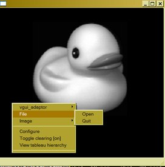
Figure 9:
A
vgui pop-up menu example. The menu shown was launched by pressing the
right mouse key. A pop-up menu can have sub-menus, as shown in the figure.
|
vgui/examples/basic06_popup.cxx:
|
|
This example contains a few new elements that should be discussed.
vgui_window *win = vgui::produce_window(512, 512):
In this case the widow is created before the display is launched. In
the previous examples, the window was created at the time of launch
using the vgui::run(..) command. Here the window is initialized
to size 512x512 display resolution elements.
win->get_adaptor()->include_in_popup(create_menus()):
This line introduces the class, vgui_adaptor. The idea of the
adaptor is to provide a uniform interface for events across all
toolkits. The adaptor also dispatches draw requests to the tableau
hierarchy. A key role for the adaptor is to attach itself to a tableau
using the method, vgui_adaptor::set_tableau. Then events
received by the adaptor can then be passed down the tableau
hierarchy. In the example, the vgui_shell_tableau is the root
of the tableau hierarchy, and the adaptor is attached to the shell.
Each tableau in the hierarchy can add to the pop-up menu. In this
example the specified menu is being included at the top-most level,
i.e. the adaptor. It is also possible to define pop-up menu entries in each
tableau in the hierarchy. To see an example of adding items to the pop-up
menu by a tableau lower in the hierarchy, take a look at
vgui_clear_tableau::add_popup(..).
win->get_adaptor()->bind_popups():
This command binds the appropriate button and modifier to launch the
pop-up menu. This method depends on the particular toolkit and is
defined by the adaptor sub-class in the vgui/impl/ sub-directory for
the toolkit being invoked.
win->show():
This code causes the window to be exposed on the screen.
vgui::run():
This command tells the window to process all events until it is terminated.
Unlike the previous examples, the window has been constructed in
advance of the run command.
| [ < ] | [ > ] | [ << ] | [ Up ] | [ >> ] | [Top] | [Contents] | [Index] | [ ? ] |
It is often necessary to obtain values for parameters, such as edge
detection thresholds or scales before applying the operation to an
image. Also it is frequently necessary to obtain a file path string in
order to read data such as image. These functions are satisfied by the
dialog menu. An example of a dialog is shown in Figure 10, which
corresponds to vgui/examples/basic07_dialog.cxx.
|
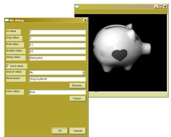
Figure 10:
The dialog menu appears when a menu item is pressed that calls a function
containing a dialog. The dialog displays names and values as well as boolean
check boxes. The state of the boxes and values can be changed and when the
dialog is dispatched, the altered values are bound to the variables in the
dialog specification. In this simple example, the latest values are output
to
vcl_cerr.
|
|
|
A dialog pops up when the associated menu item is selected. The dialog interface is reasonably self-explanatory, but it will be useful to discuss some of the main elements.
static int choice_value = 1:
It is desirable to have the values in the dialog persist from one
invocation to the next. This persistence is enabled through the use of
static variables. Also note that the indexing of the choices starts
at 1, i.e., "fltk" is the first element of the choice list. The
appearance of the choice sub dialog is shown in Figure 11 a).
mydialog.inline_file("file browser", regexp, file_value):
This file browser dialog element is used extensively in applications.
The interface is:
void inline_file(char const* label,vcl_string& regexp,vcl_string& filepath)
The argument label is the displayed name of the dialog slot
attached to the file browser. The string regexp defines a
filter on the file extensions so that only a class of files will
appear in the browser. For example, if only JPEG images are to
be selected the argument assignment would be, static vcl_string
regexp = "*.jpg". The third argument is the result and returns
the path to the selected file.
if (mydialog.ask()):
This function pops up the dialog and waits for the ok or
cancel button to be pushed. If ok is pushed then the
function returns true, and the dialog values can be processed
by the users application.
mydialog.inline_tableau(viewer, 512, 512):
Dialogs can contain an embedded hierarchy of tableaux. In this example
an image viewer with pan and zoom capability is included in the
dialog as shown in Figure 12. Any tableau can be inserted, such as
vgui_easy2D_tableau, and its capability could be used to
display geometric objects.
|
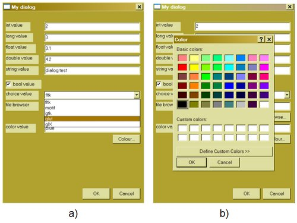 Figure 11:
a) The choice option enables a selection from a set of alternative values.
b) The color option enables a selection from a pallet of colors.
|
|
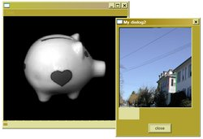
Figure 12:
Dialogs can also contain embedded images or geometric figures.
|
| [ < ] | [ > ] | [ << ] | [ Up ] | [ >> ] | [Top] | [Contents] | [Index] | [ ? ] |
As applications become more sophisticated, the programmer will need to be able
to process events in a manner appropriate to customized interactive tasks.
The vgui design has a simple interface for handling events as is
illustrated by vgui/examples/basic09_mouse_position.
The code for this example:
|
|
This example contains a number of new concepts that are important to building custom applications. The example illustrates how to go about creating a new tableau, which is a subclass of an existing tableau.
struct example_tableau : public vgui_image_tableau:
The new tableau is a child of the vgui_image_tableau. The tableau is
being defined as a struct, however it could also be a class.
struct example_tableau_new : public vgui_image_tableau_sptr:
vgui makes use of smart pointers extensively to prevent memory leaks.
The smart pointer maintains a reference count so that an object (or
struct) can be deleted when the reference count goes to zero, i.e., no
one is referencing a pointer to the object. A drawback to the smart pointer
approach is that inheritance is not maintained, that is, the smart pointer of a
child of a class is not a sub-class of the smart pointer of the class.
vgui has implemented a solution to this problem by creating a
hierarchy of smart pointers that match the tableau hierarchy.
bool handle(vgui_event const& e):
The base class for all tableaux, vgui_tableau defines the
virtual method, handle, which is called as events are passed
down the tableau hierarchy. The event is initially captured by the
vgui_adaptor which then passes it to its base tableau. If there
is no handle method defined for a tableau, then the event is processed
by its parents.
return vgui_image_tableau::handle(e):
After a particular handle method has processed an event it, can mark
it as used (true) or unused (false). If an event is
considered used by a tableau then it is eliminated and not presented
to any other tableau. If the event is unused, then it is further dispatched
to child tableaux or returned to the parent.
if (e.type == vgui_BUTTON_DOWN..):
vgui represents a spectrum of event types, which are summarized at this point for convenient reference.
It is often required to include the definition of a tableau smart pointer in other class implementations. When a new tableau is created it is convenient to define the smart pointer in a `xxx_tableau_sptr.h' file as follows:
#include <vgui/vgui_tableau_sptr.h> class xxx_tableau; typedef vgui_tableau_sptr_t<xxx_tableau> xxx_tableau_sptr; |
| [ < ] | [ > ] | [ << ] | [ Up ] | [ >> ] | [Top] | [Contents] | [Index] | [ ? ] |
vgui Events The general types of events handled by vgui are:
The following is a partial list of the event enum symbols defined in
vgui_event.h. Not all of the events enumerated in
vgui_event are described here. Some of them seem to be
vestigial and not exploited in code. A few comments will be added where
the event function is not obvious.
vgui_BUTTON_DOWN=vgui_MOUSE_DOWN=vgui_MOUSE_PRESS
vgui_BUTTON_UP=vgui_MOUSE_UP=vgui_MOUSE_RELEASE
vgui_DRAW, vgui_DRAW_OVERLAY and vgui_RESHAPE
These events cause the OpenGL display list to be re-rendered. The
draw events are generated by the virtual tableau methods,
vgui_tableau::post_redraw() and
vgui_tableau::post_overlay_redraw(). When a tableau creates or
modifies some displayable features, it is necessary to post the redraw
event to stimulate the OpenGL display list to be re-rendered. At
present, the use of overlay_redraw events is not extensive in
vgui. The design idea was that one may not want to redraw the entire
display list. In the current implementation, all these events are treated
by redrawing the display list.
vgui_ENTER and vgui_LEAVE
These events are triggered when the mouse enters/leaves the window.
vgui_HSCROLL and vgui_VSCROLL
When a window has specified the addition of scroll bars,
these events are emitted when the scroll bars are moved.
vgui_KEY_PRESS=vgui_KEY_DOWN
vgui_KEY_RELEASE=vgui_KEY_UP
vgui_MOTION
This event occurs whenever the mouse is in motion over the window.
vgui_TIMER
vgui allows users to set a timer and then have an event issued when
the time interval is completed. The timer is set by the
vgui_adaptor::post_timer(..) method. For example, the code
e.origin->post_timer(100.0) retrieves the vgui_adaptor and
issues a timer post of 100 milliseconds.
vgui_DESTROY
This event is caused by issuing a vgui_adaptor::post_destroy() command.
The purpose is to allow exit processing to be carried out before the application quits.
| [ < ] | [ > ] | [ << ] | [ Up ] | [ >> ] | [Top] | [Contents] | [Index] | [ ? ] |
vgui Buttons, Keys and Modifiers The following table defines the vgui enum symbols for buttons, keys
and modifiers:
===== Buttons ===== |
|
| left mouse button |
| middle mouse button |
| right mouse button |
===== Keys ===== |
|
| ascii 27 |
| `\t' |
| `\r' |
| `\n' |
| 0x100 + 1 |
| 0x100 + 2 |
| 0x100 + 3 |
| 0x100 + 4 |
| 0x100 + 5 |
| 0x100 + 6 |
| 0x100 + 7 |
| 0x100 + 8 |
| 0x100 + 9 |
| 0x100 + 10 |
| 0x100 + 11 |
| 0x100 + 12 |
| 0x100 + 13 |
| 0x100 + 14 |
| 0x100 + 15 |
| 0x100 + 16 |
| 0x100 + 17 |
| 0x100 + 18 |
| 0x100 + 19 |
| 0x100 + 20 |
| 0x100 + 21 |
===== Modifiers ===== |
|
| 0x0 |
| 0x1 |
| 0x2 |
| 0x4 |
| 0x8 |
When a key press event is dispatched it carries information that specifies the key and modifier structure. This code fragment illustrates the use of modified keys:
bool handle(vgui_event const& e)
{
vgui_key k = e.key;
vgui_modifier m = e.modifier;
if (m & vgui_CTRL)
if (k == 's')
{
// Do something appropriate for CTRL + 's'
...
}
return true;
}
|
The bit corresponding to the modifier is tested to see if further
action switched by the actual key is warranted. Note that the key in
a vgui_event is always lower case. This eliminates the
ambiguity that might arise in the use of the SHIFT key and upper case
vs lower case characters. The following table will illustrate the
effect of various modifier combinations.
key press | modifier | key | ascii character |
======= | ======= | ======= | ======= |
| | `a' | `a' |
| | `a' | `^a' |
| | `a' | `A' |
| | `/' | `/' |
| | `/' | `?' |
If one wants to work directly with the actual ascii character pressed, then
use e.ascii_char.
| [ < ] | [ > ] | [ << ] | [ Up ] | [ >> ] | [Top] | [Contents] | [Index] | [ ? ] |
A convenient class, vgui_event_condition is defined to
represent the occurrence of a particular event configuration. Its use
is best illustrated by an example:
bool my_tableau::handle(vgui_event const& e)
{
vgui_event_condition g0(vgui_LEFT, vgui_CTRL, false);
if (g0(e))
vcl_cout << "saw a left mouse button release with CTRL pressed event\n";
// pass the event back to the parent tableau
return vgui_my_parent_tableau::handle(e);
}
|
In this case a test for the indicated event condition is constructed and can be used to filter events passing into a tableau's handle method. The event condition class provides a compact and tidy way of expressing complex logic on modifiers, keys and buttons.
| [ < ] | [ > ] | [ << ] | [ Up ] | [ >> ] | [Top] | [Contents] | [Index] | [ ? ] |
An event passes back the position of the mouse when the event
occurred. As was illustrated in the basic09_mouse_position
example. However this position is in the coordinate system of the
display window. Most computer vision applications require positions
referenced to the coordinate system of the image being displayed, and
expressed in pixels. The class vgui_projection_inspector
provides methods for transforming between the window and image
coordinate systems.
The transformation is illustrated by this code fragment:
// Get X,Y mouse position to display on status bar
// in image coordinates
bool my_image_tableau::handle(vgui_event const& e)
{
if (e.type == vgui_MOTION && !button_down)
{
float pointx, pointy;
vgui_projection_inspector p_insp;
p_insp.window_to_image_coordinates(e.wx, e.wy, pointx, pointy);
int intx = (int)vcl_floor(pointx), inty = (int)vcl_floor(pointy);
vgui::out << '(' << intx << ' ' << inty << ")\n";
}
return vgui_image_tableau::handle(e);
}
|
| [ < ] | [ > ] | [ << ] | [ Up ] | [ >> ] | [Top] | [Contents] | [Index] | [ ? ] |
The essential elements to create a GUI application have been presented. In this section, a typical design for a main program and associated GUI management classes will be described.
| [ < ] | [ > ] | [ << ] | [ Up ] | [ >> ] | [Top] | [Contents] | [Index] | [ ? ] |
There is a tendency to pile a lot of menu callbacks and menu constructors into the main program. It is easy and convenient, but this approach doesn't stand up to evolution of the program over time. The main program quickly becomes hopelessly cluttered with a tangle of processing code, menu callbacks and tableau specifications.
A much better approach is to separate the methods used to process
callbacks and event handling into a singleton class called the
manager. The manager can be a sub-class of the top-level
tableau and thus provide custom processing of events by defining its
own ::handle method. The methods on the manager provide the
implementation for the menu callbacks.
It is also better to separate the menu construction class from the main program, since menus also tend to grow in number and complexity as the application evolves.
The following example will illustrate these design principles. The manager class looks like:
|
Some elements of the class design require explanation:
static basic_manager *instance():
This method returns a
unique single instance of the basic_manager class. This design
is called a singleton pattern and is used when the class must
maintain a unique consistent state across applications accessing the
class. This requirement frequently arises in event handling where
global access to the same event process is required. In our example,
All events are funneled through the same basic_manager instance.
basic_manager():
The constructor for this class is made private because the only way
the class should be invoked is through the ::instance method.
virtual bool handle(vgui_event const&):
Since the manager is a sub-class of a vgui_wrapper_tableau it
inherits the ::handle method. This inheritance enables the
manager to implement its own event processing and then pass unused
events onto the manager's tableau children.
vgui_image_tableau_sptr itab_ :
To provide convenient access, one can cache pointers to intermediate tableaux.
void load_image():
A typical menu callback method. This manager can be accessed by many
different applications that need to load an image. Thus, the image GUI
management code doesn't have to be continually rewritten.
The implementation of the basic_manager class is as follows:
|
Most of this code should be clear. One subtle point is the method
void basic_manager::init().
When the instance of basic_manager is created, the parent class,
vgui_wrapper_tableau, is constructed using its default constructor.
After it comes into existence, the rest of the tableau hierarchy can be inserted
as a child of basic_manager.
With this approach, there is no assumption required about the order of constructors.
|
The manager has a simple basic handle method that looks for the letter
`b'. All events are then passed to the child (shell) tableau for
further processing. This routine could return true on the
detection of the `b' event if it were desired not to have any of
the child tableaux react.
The methods to support menu callbacks are implemented in the manager.
For example, basic_manager::load_image() illustrates the use of
a dialog which pops up when the "Load Image" menu is selected.
| [ < ] | [ > ] | [ << ] | [ Up ] | [ >> ] | [Top] | [Contents] | [Index] | [ ? ] |
A menu class is defined to package up the static callback functions required
in the vgui_menu assembly. The basic_menu class is:
|
Note that the menu callback functions are paired with methods on the manager. These menus can be exported to other GUI libraries so that the same menu functionality can be re-used. However, keep in mind that under Windows special measures must be taken to export static items.
| [ < ] | [ > ] | [ << ] | [ Up ] | [ >> ] | [Top] | [Contents] | [Index] | [ ? ] |
The main program for the basic_manager application is:
|
Note that the basic manager instance is attached to the adaptor in
order to receive events, by the expression,
win->get_adaptor()->set_tableau(bas). Note that the main
program is now very simple and will stay uncluttered as the
application grows.
Several new features have been included in the construction of this window:
vgui_viewer2D_tableau.
| [ < ] | [ > ] | [ << ] | [ Up ] | [ >> ] | [Top] | [Contents] | [Index] | [ ? ] |
vgui Tableaux The following is a summary of the tableau defined in vgui.
| This tableau (or rather a tableau derived from it) can appear visible or invisible, and active or inactive by calling |
| A tableau for event record and playback. |
| To use this tableau make a |
| A tableau that performs OpenGL clearing upon receipt of a |
| The |
| For holding an ordered collection of child tableaux, only one of which is passed all events that the |
| Display of two-dimensional geometric objects - a builder tableau usually sub-classed. |
| Display of three-dimensional geometric objects - a builder tableau usually sub-classed. |
| A drag event occurs when the user moves the mouse with one of the mouse buttons pressed down. In |
| Easy interface for displaying two-dimensional geometric objects (see |
| Easy interface for displaying three-dimensional objects (see vgui_soview3D) can be added using add, or |
| Magnify/display another tableau in a region around the mouse pointer. Useful for a roaming image-processing sub-window. |
| Allows a user to insert custom functions that are called when events such as draw, mouse up, motion .. etc occur. |
| A tableau that renders its child tableaux as a rectangular grid. |
| A tableau that renders the given image using an |
| A tableau that manages a set of |
| A tableau which (optionally) loads given values for the projection and modelview matrices before passing control to its child. This is typically used to initialize GL before rendering a scene. |
| A tableau which renders its children in sub-rectangles of its viewport. The |
| A tableau which quits the application on receiving `q' or ESC. |
| A tableau which makes an ROI of an image act like a whole image. |
| A tableau for interactive drawing of lines, circles, boxes, etc. |
| Turns a non-tableau into a multi-tableau, or puts one tableau into two parts of the hierarchy simultaneously. Example: We are displaying two images, each in its own zoomer and we'd like to have a tableau which takes mouse events from one image and draws a line on the other; introduces a "crossover" in the tree which is difficult to handle without |
| A shell tableau is a handy collection of things one often wants at the very top of one's tableau hierarchy. It is essentially an acetate with N utility tableaux at the bottom. |
| A tableau for rendering text. Each piece of text is associated with an integer handle through which it can be retrieved, moved about, changed or removed. This tableau will not display any text unless you have compiled with GLUT. |
| A tableau that pops up tableau tree (tview) on `G'. |
| Displays a tableau tree. |
| A tableau for zooming and panning 2-d renderings. |
| A tableau for manipulating 3-d rendered scenes (not completed). |
| A base class tableau which insures only a single child. Useful as a base class for managers. |
| [ < ] | [ > ] | [ << ] | [ Up ] | [ >> ] | [Top] | [Contents] | [Index] | [ ? ] |
Prior to Jan 2005, image display in vgui_image_tableau was
limited to 256 (vxl_byte) levels per pixel component. Images
with pixel data types having a larger dynamic range were clamped to
the range of [0 255]. The vgui_image_tableau interface now has the method,
|
which defines how images with a dynamic range larger than one byte are to be
displayed. If the pointer rmp is null, then the previous vgui display
process is carried out as the default, otherwise range mapping is invoked.
For example if the image has unsigned short pixels, the
intensity can be anything in the range [0 65535]. To generate a
meaningful display, a range, [min max], is specified such that all
pixel intensities less or equal to min are mapped to 0 and all pixel
intensities greater or equal to max are mapped to 255. Intensities
inside the range are mapped to the [1 254] remaining display levels according
to a gamma or inversion function, as will be described below.
The parameters of the mapping are:
| The number of components in the image. A grey level image has one component, a typical RGB image has 3 components. |
| The minimum range value (luminance) for a grey level image. |
| The maximum range value for a grey level image. |
| The gamma factor in the exponential mapping of image intensity. |
| If true, then the image display is inverted to form a negative image. |
| The minimum range value for the red channel in a color image. |
| The maximum range value for the red channel in a color image. |
| The gamma for red channel mapping. |
| The minimum range value for the green channel in a color image. |
| The maximum range value for the green channel in a color image. |
| The gamma for green channel mapping. |
| The minimum range value for the blue channel in a color image. |
| The maximum range value for the blue channel in a color image. |
| The gamma for green channel mapping. |
| If |
| Under panning and zooming operations, it is not necessary to re-map the
pixel intensities. The range mapped display can be cached to avoid mapping
computation by setting |
The gamma function is defined as
1
Ig I ---
----- = (----) gamma
Imax Imax
|
Assume that the pixel intensity has been mapped to the range [0 1.0], e.g., I/Imax. The normalized intensity is raised to the power 1/gamma. The rationale for this definition is that a typical CRT display monitor has a non-linear response with exponential factor gamma. This correction compensates for the monitor response and achieves an overall linear intensity display.
In typical operation, the user will interactively adjust the min max
values in a loop that displays the mapped image until a satisfactory
display is produced. The loop should re-instantiate the parameter block
on each iteration since the update is triggered by a change in the
value of the rmp pointer. For example,
|
An example of mapping is shown in Figure 13. An example of the inversion mapping for a color image is shown in Figure 14.
|
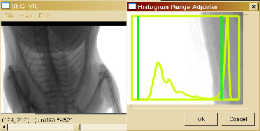
Figure 13:
A display of an x-ray image with 16 bit unsigned short pixels. An inline tableau
is used to adjust the range by moving the bars via mouse interaction. The image
contrast is displayed simultaneously with the mouse motion. A histogram is also
displayed to guide the user. Note the mouse position / image intensity display
at the lower left indicates the pixel value in the proper units and range.
|
|
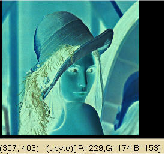 Figure 14:
The use of range mapping to invert the image color channels. Note again that the
mouse position /pixel intensity display provides the appropriate values
corresponding to the original image, not the displayed image.
|
| [ << ] | [ >> ] | [Top] | [Contents] | [Index] | [ ? ] |
This document was generated on May, 1 2013 using texi2html 1.76.